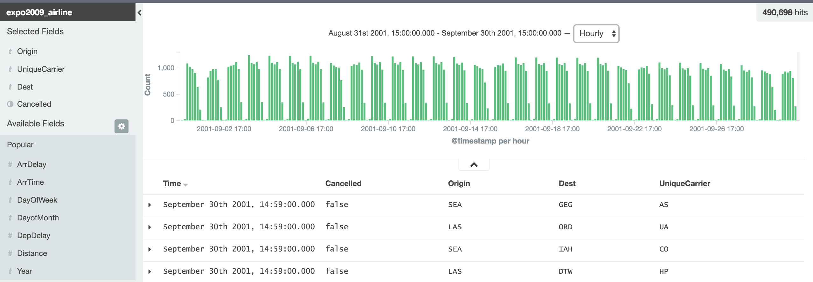

Introduction to Elasticsearch
md-devdays.de 2016


Contents
- Elasticsearch
- Search and Analytics Engine
- Indexes and stores structured or unstructured data
- Offers query language to search or aggregate data
- Logstash
- process data and store into Elasticsearch
- Ruby based import description
- Kibana
- interactive querying
- visualization (in dashboards)
Sample project
- Have complete data of all US domestic flights from 2001
- Process and store into Elasticsearch using Logstash
- Visualize data using Kibana
- Read slices of data to fuel standalone browser appplication
Elasticsearch
Kopf Plugin
Introspecting Elasticsearch using Kopf
Looking at physical entities
Cluster
Group of nodes grouped under cluster name
There always is one master node
Node
Simple Elasticsearch instance
Coordinates access to shards
Index
logical grouping over shards

Shard
part of an index
can be distributed over many nodes for failover or performance

technically a Lucene index
Logical structures
Comparing to relational DB
| Relational Database | Databases | Tables | Rows | Columns |
|---|---|---|---|---|
| Elasticsearch | Indices | Types | Documents | Fields |
Example
PUT /megacorp/employee/1
{
"first_name" : "John",
"last_name" : "Smith",
"age" : 25
}
- index: megacorp
- type: employee
- document: <json body>
- field(s): age
Sense - Making low level queries
REST calls returning JSON
Can Elasticsearch replace my relational database?
- You might not always need full text indices
- Writing (indexing) takes a lot of time
- Relational databases are great when you need joins
-
Elasticsearch might lose data
- network partitions into two intersecting components
- two nodes failing around the same time
- even more scenarios
-
What Elastic says
- Search
- Analytics
Recommendation
Use ElasticSearch when data does not change over time and is used only for searching. Use as secondary storage. Data might get lost.
Logstash
How to get data into Elasticsearch
- you configure all this in a single import file
- you run logstash using that file
- e.g.
./bin/logstash -f expo2009_airline.conf - options:
- Pandas
- Graylog
- custom code
Looking at the conf file
Logstash - Input
input {
file {
path => "ml/raw_data/expo2009_airline/2001.csv"
type => "flight"
start_position => "beginning"
codec => plain {
charset => "ISO-8859-1"
}
}
}
Logstash - Output
output {
elasticsearch {
action => "index"
hosts => "localhost:9200"
index => "expo2009_airline"
workers => 1
}
}
Filtering - CSV
filter {
csv {
columns => ["Year","Month","DayofMonth","DayOfWeek",
"DepTime","CRSDepTime","ArrTime","CRSArrTime",
"UniqueCarrier","FlightNum","TailNum","ActualElapsedTime",
"CRSElapsedTime","AirTime","ArrDelay","DepDelay","Origin",
"Dest","Distance","TaxiIn","TaxiOut","Cancelled",
"CancellationCode","Diverted","CarrierDelay","WeatherDelay",
"NASDelay","SecurityDelay","LateAircraftDelay"]
separator => ","
}
}
Filtering - Adding a Timestamp
Having a timestamp (field: @timestamp) makes data especially useful for Elasticsearch
filter {
mutate { add_field => ["timestamp",
"%{Year}-%{Month}-%{DayofMonth};%{CRSDepTime}"] }
date {
match => ["timestamp", "YYYY-MM-dd;HHmm"]
target => "@timestamp"
}
}
Filtering - Add types (optional)
Adding types makes querying faster and gives additional info for queries
mutate { convert => { "ActualElapsedTime" => "integer" } }
mutate { convert => { "CRSElapsedTime" => "integer" } }
mutate { convert => { "ArrDelay" => "integer" } }
mutate { convert => { "DepDelay" => "integer" } }
mutate { convert => { "AirTime" => "integer" } }
mutate { convert => { "Distance" => "integer" } }
mutate { convert => { "TaxiIn" => "integer" } }
mutate { convert => { "TaxiOut" => "integer" } }
mutate { convert => { "Cancelled" => "boolean" } }
mutate { convert => { "Diverted" => "boolean" } }
Kibana
- generic frontend
- browser based
- allows for dashboards
- also allows to make arbitrary adhoc queries
Discover Data
using adhoc queries
Flights Dashboard #1

Clicks trigger requests, responses update grafics
Flights Dashboard #2
Dumping 400,000 data sets
All data offline, filtered in browser
Wrap-Up
- Elasticsearch is a search engine based on Lucence
- interface are REST calls returning JSON
- works in a cluster for failsafety and performance
- especially good as secondary datastore
- very good with timelines
- logstash can help importing data into Elasticsearch
- Kibana can be used to explore and visualize your data
- Kibana allwos for generic dashboards
- you can create your own (visual) applications using data from Elasticsearch